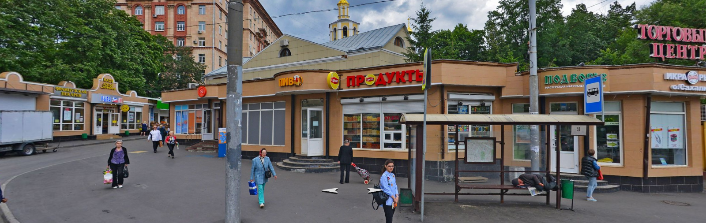

Лыжный поход в Кировской области 2020/01/03 - 2020/01/08
Table of Contents
1 Таблица распределения продуктов и общественного снаряжения
1.1 Закупка продуктов
Дата создания: 2019-12-30 09:40:11.392434 Участник: Артемьев, несет: 2650.0 product portion times weight Кто несет 9 Рис(ужин) 800.0 1.0 800.0 Артемьев 10 Гречка(ужин) 800.0 1.0 800.0 Артемьев 31 Орехи(перекус) 350.0 3.0 1050.0 Артемьев Участник: Вьяль, несет: 1600.0 product portion times weight Кто несет 11 Сладости(ужин) 400.0 1.0 400.0 Вьяль 42 Сухофрукты(в термос) 300.0 4.0 1200.0 Вьяль Участник: Кищенко, несет: 3450.0 product portion times weight Кто несет 2 Пшено(завтрак) 700.0 1.0 700.0 Кищенко 3 Сухое молоко(завтрак) 250.0 3.0 750.0 Кищенко 4 Сливочное масло(завтрак) 150.0 2.0 300.0 Кищенко 5 Изюм 200.0 1.0 200.0 Кищенко 8 Сыр(завтрак) 500.0 3.0 1500.0 Кищенко Участник: Лаврищева, несет: 1800.0 product portion times weight Кто несет 30 конфеты+вафли(перекус) 600.0 3.0 1800.0 Лаврищева Участник: Лебедев, несет: 3240.0 product portion times weight Кто несет 15 Спирт(ужин) 120.0 3.0 360.0 Лебедев 32 Сухари 500.0 4.0 2000.0 Лебедев 35 Кофе 50.0 4.0 200.0 Лебедев 36 Чай 70.0 4.0 280.0 Лебедев 38 Перец 10.0 4.0 40.0 Лебедев 39 Хмели-сунели 10.0 4.0 40.0 Лебедев 40 Аджика 30.0 4.0 120.0 Лебедев 41 Другие специи 50.0 4.0 200.0 Лебедев Участник: Ляшун, несет: 3280.0 product portion times weight Кто несет 34 Сахар 500.0 4.0 2000.0 Ляшун 43 Шиповник(в термос) 320.0 4.0 1280.0 Ляшун Участник: Миронов, несет: 3560.0 product portion times weight Кто несет 0 Геркулес(завтрак) 700.0 1.0 700.0 Миронов 1 Гречка(завтрак) 700.0 1.0 700.0 Миронов 12 Сладости(ужин) 400.0 1.0 400.0 Миронов 25 Грудинка(перекус) 400.0 1.0 400.0 Миронов 26 Колбаса(перекус) 400.0 1.0 400.0 Миронов 27 Сало(перекус) 400.0 1.0 400.0 Миронов 28 Сыр(перекус) 400.0 1.0 400.0 Миронов 37 Чеснок 40.0 4.0 160.0 Миронов Участник: Ткачева, несет: 1880.0 product portion times weight Кто несет 14 Кисель фруктовый 400.0 1.0 400.0 Ткачева 18 Сыр(перед поездом) 400.0 1.0 400.0 Ткачева 33 Соль 70.0 4.0 280.0 Ткачева 44 Лимоны в сахаре 200.0 4.0 800.0 Ткачева Участник: Шичанин, несет: 8500.0 product portion times weight Кто несет 6 Тыква 200.0 1.0 200.0 Шичанин 7 Чернослив 200.0 1.0 200.0 Шичанин 13 Козинак(ужин) 500.0 1.0 500.0 Шичанин 16 Мясо(ужин) 700.0 3.0 2100.0 Шичанин 17 Козинак(перед поездом) 500.0 1.0 500.0 Шичанин 19 Картофель 2500.0 1.0 2500.0 Шичанин 20 Капуста 700.0 1.0 700.0 Шичанин 21 Помидоры 500.0 1.0 500.0 Шичанин 22 Морковь 500.0 1.0 500.0 Шичанин 23 Лук 200.0 1.0 200.0 Шичанин 24 зелень 100.0 1.0 100.0 Шичанин 29 Козинак(перекус) 500.0 1.0 500.0 Шичанин Сводная таблица product portion times weight Кто несет 0 Геркулес(завтрак) 700.0 1.0 700.0 Миронов 1 Гречка(завтрак) 700.0 1.0 700.0 Миронов 2 Пшено(завтрак) 700.0 1.0 700.0 Кищенко 3 Сухое молоко(завтрак) 250.0 3.0 750.0 Кищенко 4 Сливочное масло(завтрак) 150.0 2.0 300.0 Кищенко 5 Изюм 200.0 1.0 200.0 Кищенко 6 Тыква 200.0 1.0 200.0 Шичанин 7 Чернослив 200.0 1.0 200.0 Шичанин 8 Сыр(завтрак) 500.0 3.0 1500.0 Кищенко 9 Рис(ужин) 800.0 1.0 800.0 Артемьев 10 Гречка(ужин) 800.0 1.0 800.0 Артемьев 11 Сладости(ужин) 400.0 1.0 400.0 Вьяль 12 Сладости(ужин) 400.0 1.0 400.0 Миронов 13 Козинак(ужин) 500.0 1.0 500.0 Шичанин 14 Кисель фруктовый 400.0 1.0 400.0 Ткачева 15 Спирт(ужин) 120.0 3.0 360.0 Лебедев 16 Мясо(ужин) 700.0 3.0 2100.0 Шичанин 17 Козинак(перед поездом) 500.0 1.0 500.0 Шичанин 18 Сыр(перед поездом) 400.0 1.0 400.0 Ткачева 19 Картофель 2500.0 1.0 2500.0 Шичанин 20 Капуста 700.0 1.0 700.0 Шичанин 21 Помидоры 500.0 1.0 500.0 Шичанин 22 Морковь 500.0 1.0 500.0 Шичанин 23 Лук 200.0 1.0 200.0 Шичанин 24 зелень 100.0 1.0 100.0 Шичанин 25 Грудинка(перекус) 400.0 1.0 400.0 Миронов 26 Колбаса(перекус) 400.0 1.0 400.0 Миронов 27 Сало(перекус) 400.0 1.0 400.0 Миронов 28 Сыр(перекус) 400.0 1.0 400.0 Миронов 29 Козинак(перекус) 500.0 1.0 500.0 Шичанин 30 конфеты+вафли(перекус) 600.0 3.0 1800.0 Лаврищева 31 Орехи(перекус) 350.0 3.0 1050.0 Артемьев 32 Сухари 500.0 4.0 2000.0 Лебедев 33 Соль 70.0 4.0 280.0 Ткачева 34 Сахар 500.0 4.0 2000.0 Ляшун 35 Кофе 50.0 4.0 200.0 Лебедев 36 Чай 70.0 4.0 280.0 Лебедев 37 Чеснок 40.0 4.0 160.0 Миронов 38 Перец 10.0 4.0 40.0 Лебедев 39 Хмели-сунели 10.0 4.0 40.0 Лебедев 40 Аджика 30.0 4.0 120.0 Лебедев 41 Другие специи 50.0 4.0 200.0 Лебедев 42 Сухофрукты(в термос) 300.0 4.0 1200.0 Вьяль 43 Шиповник(в термос) 320.0 4.0 1280.0 Ляшун 44 Лимоны в сахаре 200.0 4.0 800.0 Ткачева
1.2 Распределение снаряжения
Дата создания: 2019-12-30 09:40:37.898074
Участник: Артемьев, несет: 4900.0
equipment weight Кто несет
4 Спальник 4ка 3800.0 Артемьев
22 Термос N5 1.25л 1100.0 Артемьев
Участник: Вьяль, несет: 6140.0
equipment weight Кто несет
5 Спальник 2ка 1600.0 Вьяль
23 Ремнабор 2500.0 Вьяль
24 Аптека 1500.0 Вьяль
27 Карты, документы 200.0 Вьяль
28 Планшетка 280.0 Вьяль
29 Компас 30.0 Вьяль
30 Часы наручные 30.0 Вьяль
Участник: Кищенко, несет: 4200.0
equipment weight Кто несет
3 Спальник внутренний 4ка 4200.0 Кищенко
Участник: Лаврищева, несет: 1100.0
equipment weight Кто несет
19 Термос N2 1л 1100.0 Лаврищева
Участник: Лебедев, несет: 4600.0
equipment weight Кто несет
6 Печка + крышка от кана 3100.0 Лебедев
7 Квадрат для трубы 200.0 Лебедев
18 Термос №1 1л 1100.0 Лебедев
25 GPS1 100.0 Лебедев
26 4 батареек для GPS 100.0 Лебедев
Участник: Ляшун, несет: 4560.0
equipment weight Кто несет
8 Каны с трубой 2900.0 Ляшун
10 Половник 50.0 Ляшун
11 Мочалка 20.0 Ляшун
13 Лопата №1 490.0 Ляшун
20 Термос N3 1.25л 1100.0 Ляшун
Участник: Миронов, несет: 3900.0
equipment weight Кто несет
2 Тент для палатки (в чехле) 2000.0 Миронов
17 Пила лучковая 800.0 Миронов
21 Термос N4 1.25л 1100.0 Миронов
Участник: Пименов, несет: 7500.0
equipment weight Кто несет
0 Палатка (в чехле) 7500.0 Пименов
Участник: Ткачева, несет: 990.0
equipment weight Кто несет
1 Подставка под ЦК 200.0 Ткачева
9 Сухой спирт 120.0 Ткачева
12 Веник 170.0 Ткачева
31 Веревка(шнурок) (D=4мм) 50м 500.0 Ткачева
Участник: Шичанин, несет: 3720.0
equipment weight Кто несет
14 Топор №1 1100.0 Шичанин
15 Колун 1500.0 Шичанин
16 Пила двуручная 1120.0 Шичанин
Сводная таблица equipment weight Кто несет
0 Палатка (в чехле) 7500.0 Пименов
1 Подставка под ЦК 200.0 Ткачева
2 Тент для палатки (в чехле) 2000.0 Миронов
3 Спальник внутренний 4ка 4200.0 Кищенко
4 Спальник 4ка 3800.0 Артемьев
5 Спальник 2ка 1600.0 Вьяль
6 Печка + крышка от кана 3100.0 Лебедев
7 Квадрат для трубы 200.0 Лебедев
8 Каны с трубой 2900.0 Ляшун
9 Сухой спирт 120.0 Ткачева
10 Половник 50.0 Ляшун
11 Мочалка 20.0 Ляшун
12 Веник 170.0 Ткачева
13 Лопата №1 490.0 Ляшун
14 Топор №1 1100.0 Шичанин
15 Колун 1500.0 Шичанин
16 Пила двуручная 1120.0 Шичанин
17 Пила лучковая 800.0 Миронов
18 Термос №1 1л 1100.0 Лебедев
19 Термос N2 1л 1100.0 Лаврищева
20 Термос N3 1.25л 1100.0 Ляшун
21 Термос N4 1.25л 1100.0 Миронов
22 Термос N5 1.25л 1100.0 Артемьев
23 Ремнабор 2500.0 Вьяль
24 Аптека 1500.0 Вьяль
25 GPS1 100.0 Лебедев
26 4 батареек для GPS 100.0 Лебедев
27 Карты, документы 200.0 Вьяль
28 Планшетка 280.0 Вьяль
29 Компас 30.0 Вьяль
30 Часы наручные 30.0 Вьяль
31 Веревка(шнурок) (D=4мм) 50м 500.0 Ткачева
1.3 Ссылка на исходник(питонячья бука)
2 Рекомендации по продуктам (где купить/что купить/как упаковать)
2.1 Все финансовые расходы записывайте!
Потом всё усредним и рассчитаемся. ТЕМ, КТО ПОКУПАЕТ СЫР И КОЛБАСУ: чтобы лишний раз не бегать в магазин, очень желательно прийти со своими весами и взвесить лично покупаемый продукт. Важно, чтобы общий вес был равен тому, что написано у вас в таблице в колонке "weight".
2.2 Расфасофка круп
Крупы фасуют по разам (см. в таблице колонку "portion"). Крупа засыпается в полиэтиленовый пакет, который обматывается скотчем, затем на бумажке пишут примерно так: "Геркулес, завтрак 360г", или "Рис, ужин 720г". Обратите внимание, что вес крупы на завтрак меньше, чем вес крупы на ужин. Их путать не надо!!! Дальше мотают скотч поверх бумажки, таким образом получаем плотный кулек с бумажкой под скотчем.
2.3 Сахар и соль
2.3.1 Фасуется по бутылкам
Плотность утрамбованного сахара равна плотности воды.
2.4 Лимоны в сахаре
Берётся сахар и лимоны в пропорции 1 к 1 (для готового продукта 1080гр нужно 540гр лимнов и 540гр сахара). Лимоны нарезаются на "кружочки", затем каждый "кружочек" на "четвертинки", после чего их нужно смешать с сахаром в отдельной посуде. Подождать, пока лимоны пустят сок, а сахар растает. Получившуюся массу залить в подходящую бутылку, желательно с широким горлышком (чтобы было удобно как заполнять бутылку, так и доставать из неё лимоны в походе).
2.5 Геркулес
Традиционный геркулес марки "Русский продукт". Смотри расфасофку круп.
2.6 Рис
Рис круглозерный с мутными зернами, но без надписи "Кубань" на упаковке. Смотри расфасофку круп.
2.7 Любую гречку дороже 50руб с разумным ценником
Например "Мистраль", "Увелка", "Националь" подойдут. Смотри расфасофку круп.
2.8 Чечевица
Чечевица без надписи "Для супов" на упаковке. Жалательно крупную, не рассыпчатую. Лучше всего подойдёт зеленая. Подойдут "Мистраль", "Вкусвилл" и т.п. ("Каждый день" лучше не брать). Смотри расфасофку круп.
2.9 Спагетти
Спагетти N3, Barilla или Federici. Паковать так же, как и крупы. Смотри расфасофку круп.
2.10 Сухое молоко
Сухое молоко надо брать марки "Славянская трапеза" в расфасовке 200г. На один завтрак по раскладке нужно 225г, а уменьшение порции молока с 225 до 200г приведет к уменьшению порции на участника с 25 до 22г. Это не критично, посколько раскладка будет 637-ми грамовая. Таким образом одна 200г пачка уходит за один завтрак. Пачку сухого молока надо замотать скотчем. Молоко можно купить тут. Если вместо 200грамовых пачек будут 400грамовые, то возьмите их в два раза меньше.

Figure 1: Сухое молоко Славянская трапеза
2.10.1 Сухое молоко в кофе
См. пункт "Сухое молоко". Отличается только фасофка. Надо засыпать в подходящего размера бутылку. Если ничего подходящего не находится - пишите.
2.11 Колбаса
В Ремите продается отличная колбаса. Называется "Миланская". Купить её можно в Ремите на Войковской.
2.12 Сыр на завтрак
"Императорский" сыр (обычно продаётся в круглой упаковке). Возможно есть там же, где и сыр на перекус. Целиком упаковка весит 2кг, поэтому нужно попросить отрезать половину (а точнее 1080гр). Если сыра нет в этом магазине, можно попробовать купить в ближайшем (тут, вход под вывеской "Французская пекаря" - с правой стороны есть сыр). На разовые порции сыр резать не нужно - берите в поход целым куском! Хранить сыр нужно не в пакете, а в ткани (подойдёт любая чистая).
2.13 TODO Сыр на перекус (ссылка на магазин устарела)
Есть вкусный твердый сыр из Алтая. Называется "Джугас". Купить его можно (ссылка устарела).
2.14 Изюм
Можно купить там же, где и сыр на перекус. Хорошо если получится купить смесь из разного винограда (темного / светлого). После покупки изюм нужно тщательно промыть, высушить и сложить в бутылку подходящего размера.
2.15 Шоколад
Насте В. уже даны подробные поручения. Частично продублирую: покупаем молочный и горький шоколад. Часть шоколада можно сделать из Lindt, Heidi, Schogetten и т.п. Настя В. хочет попробовать купить в поход Rioba.
2.16 Орехи
Орехи можно попробовать купить тут. Если в группе есть аллергики на орехи, то на их долю нельзя покупать грецкие (но лучше уточнять лично). Нейтральными являются кешью, кедровые и фисташки. Если нет аллергии, то можно еще миндаль, грецкие, фундук и бразильский орех. Порции орехов разделить по разам (т.е. если есть несколько видов орехов, их нужно смешать вместе в объеме равном "portion" в таблице), сложить в обычный целлофановый пакет и замотать скотчем.
2.17 Сухари
Сушим черный «дарницкий» хлеб. Никаких специфических сортов, типа бородинского, не надо. Сечение буханки делится на 4 части. Каждая такая четвертинка после высушивания весит около 10 грамм. В литровый пакет (тетрапак) из под молока при плотной упаковке помещается около 360 грамм сухарей (36 четвертинок). Заполненный сухарями тетрапак обмотать скотчем.
Купить такой хлеб можно в Магнолии (Волоколамское ш., 15/22).
Подойдёт дарницкий "Дедовский" нарезной ("дарницкие" разные бывают - этот не крошится в руках и прекрасен для сухарей). Может быть и любой другой, главное, чтобы он не крошился в руках и держал форму.
Духовка. 140 градусов. На противне, без масла. 25 минут с каждой стороны (всего 50 минут).
Если не будет хватать тетрапаков - обращайтесь.

2.18 Сладости
Покупаем всегда тут. Нужно купить: "Узбекскую халву", "Кос. халву", "Фисташковую халву" - лучше всего всех по 2 шт. Можно сразу попросить поделить по 360гр (1 порция). Если чего-то не будет, то желательно позвонить завхозу. Так же "кос. халва" продаётся там же, где и сыр на перекус. Каждую порцию сладкого по 360гр положить в пакет и замотать её скотчем.
2.19 Магазины
2.19.1 Ленинградский проспект, 73Ас3 ("Продукты")

Можно купить:
2.19.2 м. Водный стадион Панорама Yandex
Метро Водный Стадион, выход 1. От выхода из метро повернуть налево и дойти до входа на крытый рынок ТК "У ВОДНОГО" (см. ссылку). По правой стороне (примерно в середине торгового ряда) будет лавочка с сухофруктами и орехами в которой левая стенка зеркальная(там зеркала стоят).
Номер телефона продавца: +7(905)540-93-93 (Баходур)
В этой палатке можно купить:
- Все сухофрукты
- Орехи
- Шиповник из Таджикистана
3 Список личного снаряжения (Лебедев А)
| Название | Вес г | |
|---|---|---|
| Лыжное снаряжение | ||
| лыжи | обязательно | |
| палки | обязательно | |
| мазь держания + растирка | обязательно для лыж без насечки. | |
| Рюкзак с клапаном 120-130л | обязательно | 1700 |
| коврик двухслойнай N1 16mm | обязательно | |
| коврик двухслойный N2 16mm | обязательно | 560 |
| Теплые лапки | ||
| Ботинки Baffin 3pin Expedition | обязательно (либо бахил + ботинок) | 3000 |
| Сапоги из пены | обязательно | |
| тапочки в поезд | ||
| чуни + шерстяные носки | полезно иметь | 280 |
| Внутренние слои | ||
| трусы 2 | ||
| комплект термобелья (кофта + ретузы) | обязательно | 380 |
| флиска синяя, тонкая | 260 | |
| штаны поларовые толстые | обязательно | 400 |
| кофта поларовая, толстая с капюшоном | обязательно | 580 |
| термоноски 2 пары | обязательно | |
| Наружное утепление | ||
| штаны ветрозащитные (толстый капрон) | обязательно | 320 |
| анорак (толстый капрон) | обязательно | 460 |
| штаны самосбросы (теплые) | очень полезная вещь | 600 |
| куртка теплая, желтая | обязательно обеспечить 200-250g/m2 утеплителя | 680 |
| куртка теплая, красная | возьму в качестве аварийной пуховки | 780 |
| шапка флисовая тонкая | ||
| шапка флисовая толстая | обязательно | |
| шарф труба | обязательно | |
| лыжная маска | обязательно | |
| Теплые руки | ||
| руковицы верхонки с вкладышем | обязательно | |
| перчатки толстые флисовые RedFox | обязательно | |
| перчатки с тонким флисом 1 пара | хорошо бы их взять | |
| хозяйственные перчатки ХБ 1пара | заниматься в них с печкой | |
| Важная мелочь | ||
| фонарик с 3 комплектами бат. | обязательно | |
| Кружка, ложка, миска, нож | обязательно | |
| порошковая паста + щетка | обязательно | |
| туалетная бумага | обязательно | |
| антисептик | ||
| крем для рук и лица | обязательно, если нет пемикана | |
| зеркало | ||
| скотч | обязательно | |
| зажигалка | обязательно | |
| телефон | обязательно | |
| паспорт + деньги | обязательно | |
| Досуг | ||
| плеер + наушники + ebook | ||
| мини-штатив | ||
| фотоаппарат | ||
| аккамулятор + всякие проводки | ||
| Позиции ниже внести в общественное | ||
| карты | ||
| весы | ||
| маршрутная книжка |
4 График движения
Отправление 03.01 в 21:20 с Ярославского вокзала поездом 252ЧА, вагон 09. В Котелнич приедем 04.01 в 11:02.
Обратно едем 07.01 в 23:20 поездом 227ЭА, вагон 05. В Москве будем 08.01 в 16:28.
4.1 Основной план
| Даты | Дни пути | Участки маршрута | Км |
|---|---|---|---|
| 04.01 | 1 | Ежиха - сев. Болото | 3.5 |
| 05.01 | 2 | Болото - руч. Плоский Лог - с. Федосеевское - с. Холмы | 16 |
| 06.01 | 3 | р.Юма - ЛЭП - с. Лебеди - р. Ацвеж - ур. Саватенки | 17 |
| 07.01 | 4 | ур. Саватенки - с. Александровское - ст. Ацвеж | 17.7 |
| 54.2 |
4.2 Запасной вариант 1
От села Деменки есть путь на северо-восток на станцию Капиданцы. Этот вариант сокращает длину маршрута на 15км и позволяет не переходить р. Ацвеж.
| Участки маршрута | Км |
|---|---|
| По основному маршруту дни 1, 2 | 19.5 |
| с. Холмы - р. Юма - ЛЭП - с. Лебеди - ур. Деменки | 8.6 |
| ур. Деменки - ст Капиданцы | 11.21 |
| 39.3 |
4.3 Запасной вариант 2
При невозможности перейти реку Юма возможен вариант выхода к селу Свеча.
| Участки маршрута | Км |
|---|---|
| По основному маршруту дни 1, 2 | 19.5 |
| с. Холмы - с.Загребины - ур. Ванченки - с. Глушки(с. Свеча) | 14 |
| 33.5 |
4.4 Запасной вариант 3
От села Холмы есть возможность пойти на север в сторону остановки о.п. 821. Таким образом исключается переход через реку Юма.
| Участки маршрута | Км |
|---|---|
| По основному маршруту дни 1, 2 | 19.5 |
| с. Холмы - ЛЭП на север - о.п. 821 | 10 |
| 29.5 |